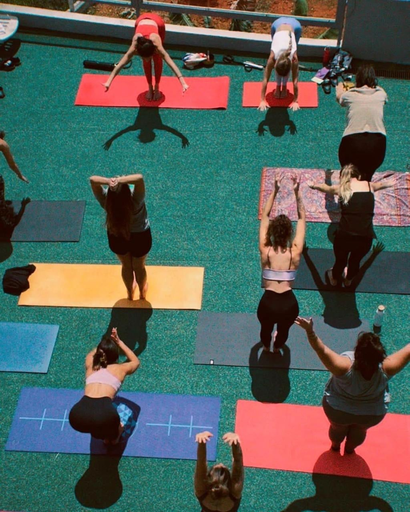
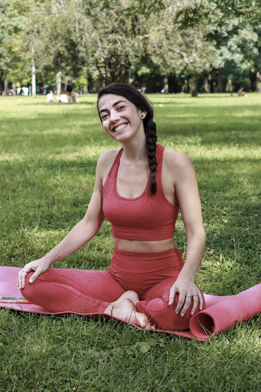
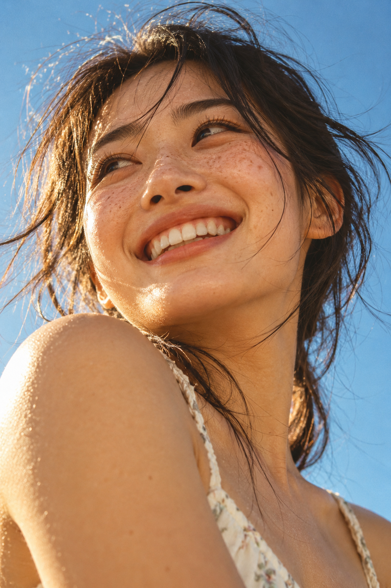
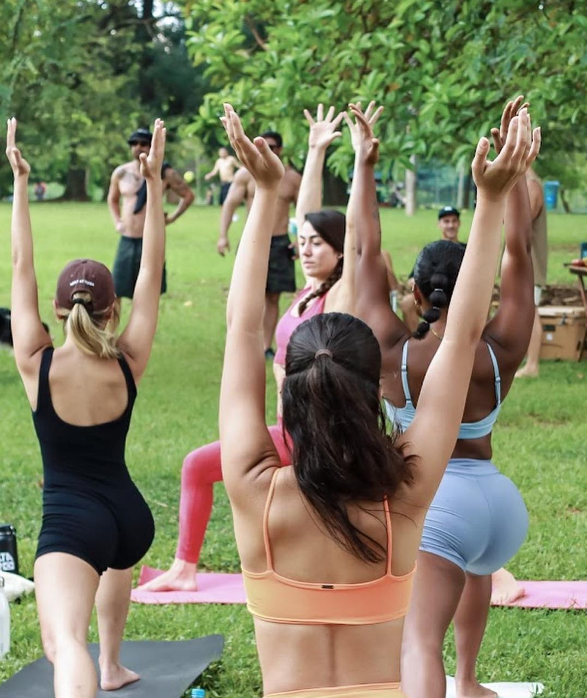
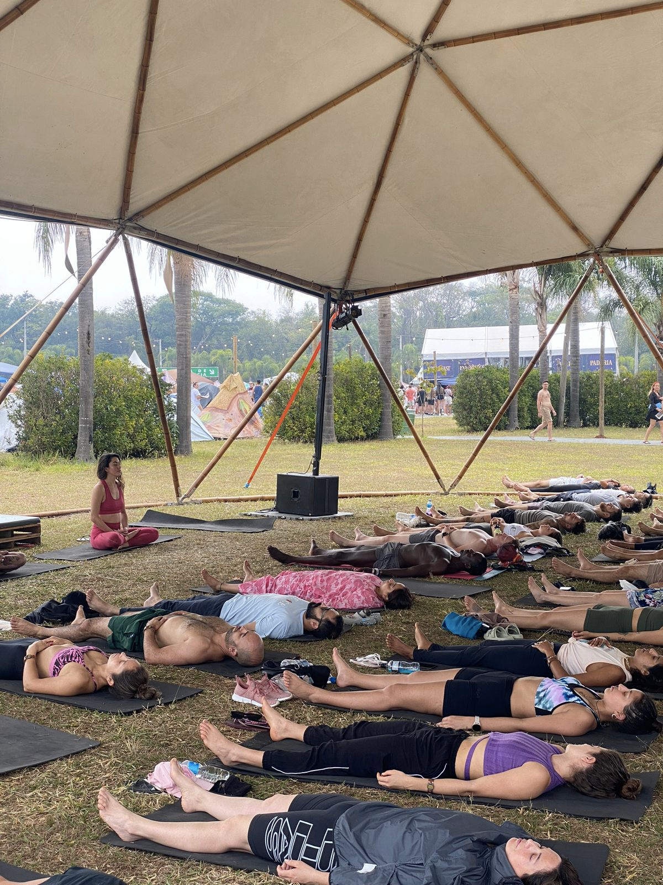
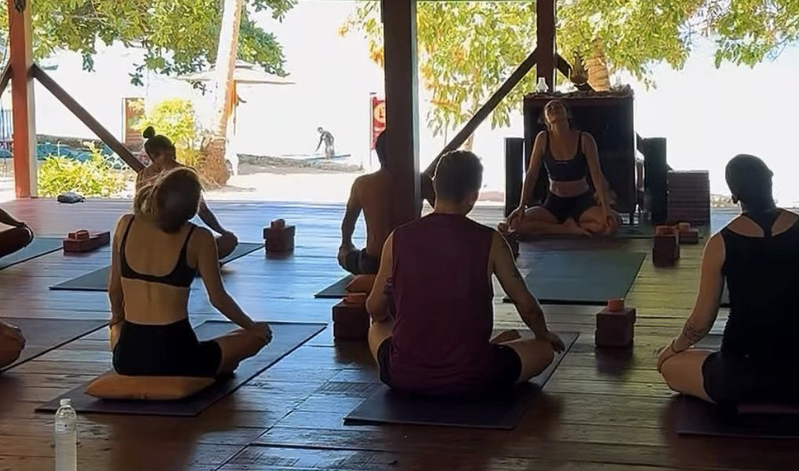
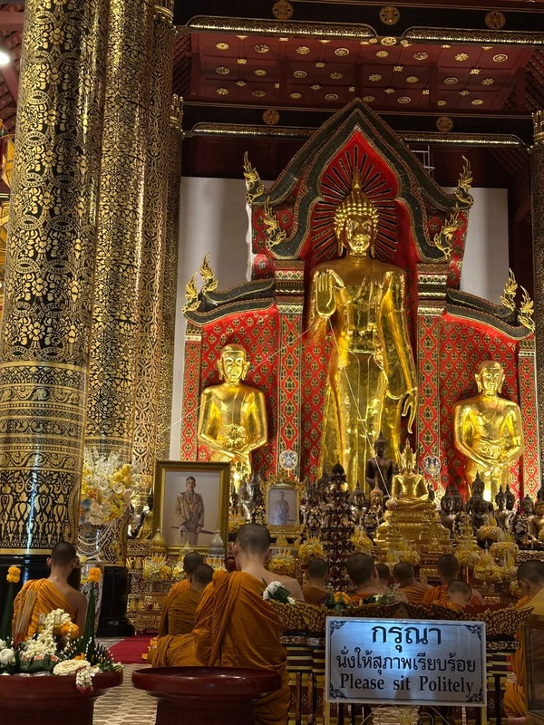
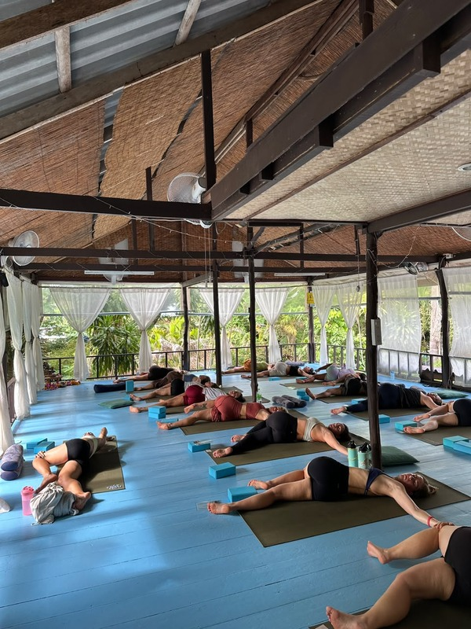
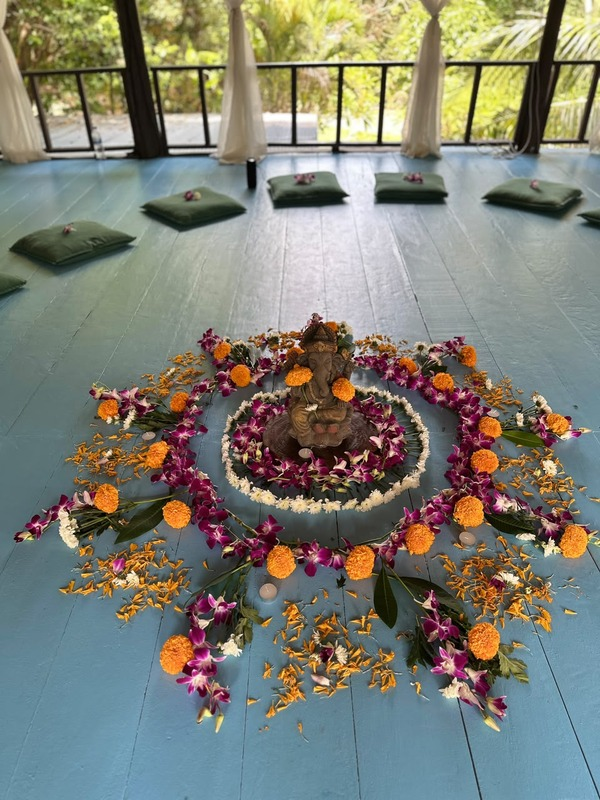
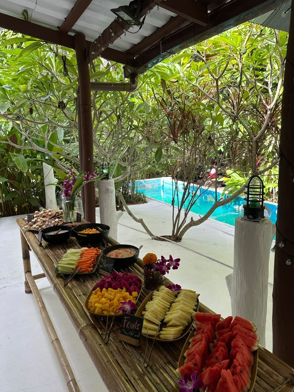

01
Yoga & Meditação
Aulas e práticas guiadas em português e inglês, adaptadas a diferentes públicos e momentos.



Jornalista e instrutora
de Yoga e Meditação.
Experiências que aproximam as pessoas
de si mesmas e do mundo ao redor.
Aulas e práticas guiadas em português e inglês, adaptadas a diferentes públicos e momentos.
Criação e condução de atividades fora da caixa, autoconhecimento e conexão com o corpo e a natureza, além de organização de retiros e programações especiais.
Contribuição com a criação de conteúdo, a organização de atividades e os detalhes que tornam a experiência no resort mais acolhedora e significativa.
Meu nome é Giovanna Ribeiro, sou jornalista e instrutora de Yoga e Meditação, com anos de experiência no mercado.
Gosto de unir comunicação, criatividade e bem-estar para criar experiências que aproximem as pessoas de si mesmas, umas das outras e do ambiente ao redor.
Acredito na força dos detalhes e em como boas experiências podem transformar a maneira como nos sentimos.

São mais de 7 anos de experiência e sigo em constante estudo.
Dom School
Com Cristiano Collyer

Ao longo dos últimos anos, conduzi práticas em diversos estúdios em São Paulo, parques públicos, projetos sociais para crianças e adultos, e eventos corporativos de diferentes empresas.
Fui convidada a conduzir práticas para grupos com mais de 200 alunos, de diferentes nacionalidades e níveis de prática, no festival Tomorrowland Brasil.
Na Tailândia, aprofundei minha relação com o yoga, a meditação e as técnicas de autoconhecimento por meio de experiências imersivas em espaços dedicados ao bem-estar e nos templos budistas.





Participei do programa Awakening & Healing do resort de Wellness Samma Karuna, onde também conduzi práticas de Hatha e Vinyasa Yoga.
Vivenciei a rotina na escola internacional La Casa Shambala, onde participei das aulas e atividades da formação em Yoga, além de colaborar com o dia a dia do espaço em diferentes frentes. Também realizei um trabalho de social media e contribuí com ideias criativas e experiências para os hóspedes e alunos.